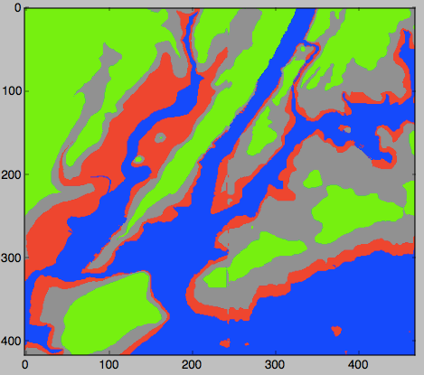
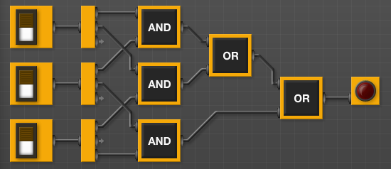

Programming Problem List
General Notes
-
Every program should begin with a comment that includes your name and
a brief description.
#Name: Thomas Hunter #Date: January 26, 2021 #This program prints: Hello, World! print("Hello, World!") - You are encouraged to submit your assignments early. Below lists the last date on which each assignment will be accepted. Assignments must be submitted before 9pm on the date due.
- No credit will be given for an assignment submitted late.
- Before submitting an assignment you are free to ask for help in recitation.
- For more information on using gradescope, see the first lab.
- All work submitted must be your own. As a rule of thumb, you must do your own typing. If it is not from the book or class webpage and you did not type it, it is plagiarism. For the first incident, your grade will be a 0 for the assignment (even for cases where you typed the program but others submitted it as their own). For the second incident of cheating or plagiarism, your grade will be a 0 for the homework component of the grade (30% of your overall grade). For the third incident, you will fail the class. We report all incidents to the Office of Student Affairs.
- Learning programming is like learning a foreign language: you will learn more (with less work) if you practice every day. Some of the programs below are easy; some will take more time. Set aside a block of time every day to work on programming. If you complete the program for that day, go on to the next with your remaining time.
Submit the following programs via Gradescope:
-
Due Date: 6 February Reading: Think CS Chapters 1 & 2
Write a program that prints “Hello, World!” to the screen.
Hint: See Lab 1.
-
Due Date: 6 February Reading: Think CS Chapters 2 & 4
Write a program that draws an octagon (8-sided polygon).
Note: Choose a name for your file that is not turtle.py. When executing the “import turtle” statement, the computer first looks in the folder where the file is saved for the turtle module and then in the libraries (and other places on the path). So, it thinks the module is itself, causing all kinds of errors. To avoid this, name your program something like “myTurtle.py” or “program2.py”.
Hint: See Lab 1.
-
Due Date: 6 February Reading: Think CS Chapters 2 & 4
Write a program that implements the pseudocode (“informal high-level description of the operating principle of a computer program or other algorithm”) below:
Repeat 45 times: Walk forward 100 steps Turn right 92 degrees Walk forward 10 steps Turn right 92 degreesYour output should look similar to:
-
Due Date: 6 February Reading: Think CS Chapters 2 & 4
Write a program that will print the Hunter College motto (“Mihi cura futuri” which translates to: “The care of the future is mine”) 19 times.
The output of your program should be:
Mihi cura futuri Mihi cura futuri Mihi cura futuri Mihi cura futuri Mihi cura futuri Mihi cura futuri Mihi cura futuri Mihi cura futuri Mihi cura futuri Mihi cura futuri Mihi cura futuri Mihi cura futuri Mihi cura futuri Mihi cura futuri Mihi cura futuri Mihi cura futuri Mihi cura futuri Mihi cura futuri Mihi cura futuri -
Due Date: 6 February Reading: Think CS Chapters 4 Copy the program from Section 4.3 into a file on your computer and modify the program (with turtles alex and tess) to have a purple background color and have tess draw white lines:
-
Due Date: 6 February Reading: Think CS Chapters 2 & Section 4.7
Write a program that prints out the numbers from 0 to 14.
The output of your program should be:
0 1 2 3 4 5 6 7 8 9 10 11 12 13 14Hint: Use a loop and print out the index or loop variable.
-
Due Date: 13 February Reading: Think CS Chapters 2 & 4
Write a Python program that prompts the user for a message, and then prints the message, the message in upper case letters, and the message in lower case letters.
A sample run of your program should look like:
Enter a message: Mihi cura futuri Mihi cura futuri MIHI CURA FUTURI mihi cura futuriAnother run:
Enter a message: I love Python! I love Python! I LOVE PYTHON! i love python! -
Due Date: 13 February Reading: Think CS Chapters 2 & 9
Write a program that prompts the user to enter a phrase and then prints out the ASCII code of each character in the phrase.
A sample run of your program should look like:
Enter a phrase: I love Python! In ASCII: 73 32 108 111 118 101 32 80 121 116 104 111 110 33Hint: If c is a character, ord(c) returns its ASCII code. For example, if c is ‘I’, then ord(c) returns 73. See Lab 2.
-
Due Date: 13 February Reading: Think CS Chapters 2 & 9

(The cipher disk above shifts ‘A’ to ‘N’, ‘B’ to ‘O’, … ‘Z’ to ‘M’, or a shift of 13. From secretcodebreaker.com.) Write a program that prompts the user to enter a word and then prints out the word with each letter shifted right by 13. That is, ‘a’ becomes ‘n’, ‘b’ becomes ‘o’, … ‘y’ becomes ‘l’, and ‘z’ becomes ‘m’.Assume that all inputted words are in lower case letters: ‘a’,…,’z’.
A sample run of your program should look like:
Enter a word: zebra Your word in code is: mroenHint: See the example programs from Lecture 2.
-
Due Date: 13 February Reading: Think CS Chapters 2 & 9
Write a program that implements the pseudocode below:
For i = 10, 20, 30, ..., 100: Walk forward i steps Turn left 94 degreesYour output should look similar to:
Hint: See Lab 2.
-
Due Date: 27 February Reading: Think CS Chapters 4 & 9
Write a program that asks the user for a message and then prints the message out, one character per line, in reverse order.
A sample run of your program should look like:
Enter a message: I love Python! ! n o h t y P e v o l IHint: See Lab 2 or Lecture 2 notes.
-
Due Date: 27 February Reading: Think CS Chapters 2 & 4
Modify the program from Lab 3 to show the shades of green.
Your output should look similar to:
-
Due Date: 27 February Reading: Think CS Chapters 2 & 4
Write a program that asks the user for the hexcode of a color and then displays a turtle that color.
A sample run of your program should look like:
Enter a hex string: #A922A9and the output should look similar to:
Hint: See Section 4.3 for setting the background color and Lab 3 for colors.
-
Due Date: 27 February Reading: Think CS Chapters 2 & 4
Write a program that asks the user for a name of an image .png file and the name of an output file. Your program should create a new image that has only the green channel of the original image.
A sample run of your program should look like:
Enter name of the input file: csBridge.png Enter name of the output file: greenH.pngSample input and resulting output files:

Note: before submitting your program for grading, remove the commands that show the image (i.e. the ones that pop up the graphics window with the image). The program is graded on a server on the cloud and does not have a graphics window, so, the plt.show() commands will give an error. Instead, the files your program produces are compared pixel-by-pixel to the answer to check for correctness.
-
Due Date: 27 February Reading: Think CS Chapters 2 & 4
Write a program that implements the pseudocode below. Your program should ask the user for a binary number and print out the corresponding decimal number.
Ask user for input, and store in the string, binString.
Set decNum = 0. For each c in binString, Set n to be int(c) Double decNum and add n to it (decNum = 2 * decNum + n) Print decNumA sample run of the program:
Enter binary number: 10 Your number in decimal is 2And another sample run of the program:
Enter binary number: 1111 Your number in decimal is 15Note: here’s a quick review of binary numbers.
-
Due Date: 6 March Reading: Think CS Section 2.7
Write a program that converts kilometers to miles. Your program should prompt the user for the number of kilometers and then print out the number of miles.
A useful formula: miles = 0.621371* kilometers.
See Lab 4 for designing Input-Process-Output programs.
-
Due Date: 6 March Reading: Think CS Section 2.7 & 4
Write a program that implements the pseudocode below:
1. Ask the user for the number of hours until the weekend. 2. Print out the days until the weekend (days = hours // 24) 3. Print out the leftover hours (leftover = hours % 24)
A sample run of your program should look like:
Enter number of hours: 27 Days: 1 Hours: 3and another sample run:
Enter number of hours: 52 Days: 2 Hours: 4Hint: See Section 2.7.
-
Due Date: 6 March Reading: Think CS Chapters 4 & 7
Write a program that asks the user for 5 whole (integer) numbers. For each number, turn the turtle left the degrees entered and then the turtle should move forward 100.
A sample run of your program should look like:
Enter a number: 270 Enter a number: 100 Enter a number: 190 Enter a number: 200 Enter a number: 80and the output should look similar to:

-
Due Date: 6 March Reading: Think CS Chapters 4 & 7
Modify the flood map of NYC from Lab 4 to color the region of the map with elevation greater than 6 feet and less than or equal 20 feet above sea level the color grey (50% red, 50% green, and 50% blue).
Your resulting map should look like:

and be saved to a file called floodMap.png.
Note: before submitting your program for grading, remove the commands that show the image (i.e. the ones that pop up the graphics window with the image). The program is graded on a server on the cloud and does not have a graphics window, so, the plt.show() commands will give an error. Instead, the files your program produces are compared pixel-by-pixel to the answer to check for correctness.
-
Due Date: 6 March Reading: Think CS: Section 8.10
Modify the map-making program from Lab 4 to create a map that outlines the coastline. Your program should create a new image, called coast.png with the pixels colored as follows:
- If the elevation is less than or equal to 0, color the pixel 50% blue (and 0% red and 0% green).
- If the elevation is exactly 1, color the pixel 75% red, 75% green, and 75% blue.
- Otherwise, the pixel should be colored 50% red, 50% green, and 50% blue.
Your resulting map should look like:
and be saved to a file called coast.png.
Note: before submitting your program for grading, remove the commands that show the image (i.e. the ones that pop up the graphics window with the image). The program is graded on a server on the cloud and does not have a graphics window, so, the plt.show() commands will give an error. Instead, the files your program produces are compared pixel-by-pixel to the answer to check for correctness.
-
Due Date: 13 March Reading: Think CS Chapter 7
Write a program that asks the user for the name of a png file and print the number of pixels that are nearly white (the fraction of red, the fraction of green, and the fraction of blue are all above 0.75).
For example, if your file was of the snow pack in the Sierra Nevada mountains in California in February 2014:
then a sample run would be:
Enter file name: caDrought2014.png Snow count is 38010Note: for this program, you only need to compute the snow count. Showing the image will confuse the grading script, since it’s only expecting the snow count.
Hint: See Lab 5.
-
Due Date: 13 March Reading: Burch’s Logic & Circuits
Write a logical expression that is equivalent to the circuit that computes the majority of 3 inputs, called in1, in2, in3:
- If two or more of the inputs are True, then your expression should evaluate to True.
- Otherwise (two or more of the inputs are False), then your expression should evaluate to False.

Save your expression to a text file. See Lab 5 for the format for submitting logical expressions to Gradescope.
-
Due Date: 13 March Reading: Burch’s Logic & Circuits
Build a circuit that has the same behavior as a nor gate (i.e. for the same inputs, gives identical output) using only and, or, and not gates.Save your expression to a text file. See Lab 5 for the format for submitting logical expressions to Gradescope.
-
Due Date: 13 March Reading: Think CS Chapters 2 & 4
The program turtleString.py takes a string as input and uses that string to control what the turtle draws on the screen (inspired by code.org’s graph paper programming). Currently, the program processes the following commands:
- ‘F’: moves the turtle forward 50 steps
- ‘L’: turns the turtle 90 degrees to the left
- ‘R’: turns the turtle 90 degrees to the right
- ’^’: lifts the pen
- ‘v’: lowers the pen
For example, if the user enters the string “FLFLFLFL^FFFvFLFLFLFL”, the turtle would move forward and then turn left. It repeats this 4 times, drawing a square. Next, it lifts the pen and move forward 3, puts the pen back down and draw another square.
Modify this program to allow the user also to specify with the following symbols:
- ‘B’: moves the turtle backwards 50 steps
- ‘S’: makes the turtle stamp
- ‘l’: turns the turle 45 degrees to the left
- ‘r’: turns the turtle 45 degrees to the right
- ‘p’: change the pen color to purple
Hint: See Lecture 4 notes.
-
Due Date: 13 March Reading: Think CS Chapter 4 & Section 7.4
Write a program that uses the turtle package to implement the following pseudocode:
1. Ask the user for a whole number.
2. If that number is even, your turtle should draw a blue line towards the left hand side of the screen. 3. If that number is odd, your turtle should draw a red line towards the right hand side of the screen.A sample run of your program should look like:
Enter a whole number: 2and the output should look similar to:
Another run:
Enter a whole number: -1and the output should look similar to:
Hint: See Section 7.4 of the Python textbook and Lecture 4 notes.
-
Due Date: 20 March Reading: Numpy tutorial (DataCamp)
Modify the program from Lab 6 that displays the NYC historical population data. Your program should ask the user for the borough, an name for the output file, and then display the fraction of the population that has lived in that borough, over time.
A sample run of the program:
Enter borough name: Queens Enter output file name: qFraction.pngThe file qFraction.png:

Note: before submitting your program for grading, remove the commands that show the image (i.e. the ones that pop up the graphics window with the image). The program is graded on a server on the cloud and does not have a graphics window, so, the plt.show() commands will give an error. Instead, the files your program produces are compared pixel-by-pixel to the answer to check for correctness.
-
Due Date: 20 March Reading: 10-mins to Pandas, DataCamp Pandas
Write a program that computes the average and maximum population over time for a borough (entered by the user). Your program should assume that the NYC historical population data file, nycHistPop.csv is in the same directory.
A sample run of your program: Enter borough: Staten Island Average population: 139814.23076923078 Maximum population: 474558and another run:
Enter borough: Brooklyn Average population: 1252437.5384615385 Maximum population: 2738175Hint: See Lab 6.
-
Due Date: 20 March Reading: Think CS Chapter 7
Write a program that asks the user for the hour of the day (in 24 hour time), and prints
- “Good Morning” if it is strictly before 12,
- “Good Afternoon” if it is 12 or greater, but strictly before 17, and
- “Good Evening” otherwise.
A sample run:
Enter hour (in 24 hour time): 11 Good MorningAnother sample run:
Enter hour (in 24 hour time): 20 Good EveningAnd another run:
Enter hour (in 24 hour time): 15 Good Afternoon -
Due Date: 20 March Reading: Ubuntu Terminal Reference Sheet
Write an Unix shell script that prints Hello, World to the screen.
Submit a single text file containing your shell commands. See Lab 6.
-
Due Date: 20 March Reading: Burch’s Logic & Circuits
Logical gates can be used to do arithmetic on binary numbers. For example, we can write a logical circuit whose output is one more than the inputted number. Our inputs are in1 and in2 and the outputs are stored in
out1,out2, andout3.
(click to launch new window with circuit)Here is a table of the inputs and outputs:
Inputs Outputs Decimal
Numberin1 in2 Decimal
Numberout1 out2 out3 0 0 0 1 0 0 1 1 0 1 2 0 1 0 2 1 0 3 0 1 1 3 1 1 4 1 0 0 Submit a text file with each of the outputs on a separate line:
#Name: YourNameHere #Date: April 2017 #Logical expressions for a 4-bit incrementer out1 = ... out2 = ... out3 = ...Where
...is replaced by your logical expression (see Lab 5). -
Due Date: 27 March Reading: 10-mins to Pandas, DataCamp Pandas
Modify the program from Lab 7 to:
- asks the user to specify the input file,
- asks the user to specify the output file,
- makes a plot of the fraction of the total population that are children over time from the data in input file, and
- stores the plot in the output file the user specified.
A sample run of the program:
Enter name of input file: DHS\_2015\_2016.csv Enter name of output file: dhsPlot.pngwhich produces an output:
Note: The grading script is expecting that the label (i.e. name of your new column) is
"Fraction Children". -
Due Date: 27 March Reading: Think CS Section 6.7
Write a program, using a function
main()that printsHello, World!to the screen. See Lab 7. -
Due Date: 27 March Reading: Think CS Chapter 9
Write a program that asks the user for a list of nouns (separated by spaces) and approximates the fraction that are plural by counting the fraction that end in
s. Your program should output the total number of words and the fraction that end ins. You may assume that words are separated by spaces (and ignore the possibility of tabs and punctuation between words.)A sample run of the program:
Enter nouns: apple bananas cantaloupes durian Number of words: 4 Fraction of your list that is plural is 0.5And another sample run of the program:
Enter nouns: hats gloves coats glasses scarves Number of words: 5 Fraction of your list that is plural is 1.0Hint: Break this problem into pieces:
_* First, count the number of words in the string the user entered (hint: count the number of spaces). Print out the number of words. Make sure this works before going onto the next part.
-
Next, ignoring the last word (which is a special case and can be
dealt with separately), count the number of words ending in
s(hint: count the number ofs). Test that this part works before going on to the next step. -
Last, check the last word to see if it ends in
s– since it’s the last word, theswill always occur at the same index in the string._
Implement (and test!) each part and then go on to the next.
-
Next, ignoring the last word (which is a special case and can be
dealt with separately), count the number of words ending in
-
Due Date: 27 March Reading: Burch’s Logic & Circuits
Write a logical expression that takes a single input, in1, and always returns True. Your expression must only use in1 and the logical operators, and, or, and not
See Lab 5 for the format for submitting logical expressions to Gradescope.
Hint: Think about the circuit below:
-
Due Date: 27 March
Write a program that asks the user for the name of an image, the name of an output file. Your program should then save the lower left quarter of the image to the output file specified by the user.
A sample run of your program should look like:
Enter image file name: hunterLogo.png Enter output file: logoLL.pngwhich would have as input and output:
Hint: See sample programs from Lectures 4 and 6.
Note: before submitting your program for grading, remove any commands that show the image (i.e. the ones that pop up the graphics window with the image). The program is graded on a server on the cloud and does not have a graphics window, so, the
plt.show()commands will give an error. Instead, the files your program produces are compared pixel-by-pixel to the answer to check for correctness. -
Due Date: 3 April Reading: 10-mins to Pandas, DataCamp Pandas
Modify the parking ticket program from Lab 8 to do the following:
- Ask the user for the name of the input file.
- Ask the user for the attribute (column header) to search by.
A sample run:
Enter file name: Parking\_Violations\_Jan_2016.csv Enter attribute: Vehicle Color The 10 worst offenders are: WHITE 2801 WH 2695 GY 1420 BK 1153 BLACK 1054 BROWN 727 BL 656 GREY 574 SILVE 450 BLUE 412 Name: Vehicle Color, dtype: int64And another run:
Enter file name: Parking\_Violations\_Jan_2016.csv Enter attribute: Vehicle Year The 10 worst offenders are: 0 3927 2015 1265 2014 1143 2013 1105 2012 772 2011 666 2007 643 2008 559 2010 509 2006 499 Name: Vehicle Year, dtype: int64 -
Due Date: 3 April Reading: Github Guide
In Lab 8, you created a github account. Submit a text file with the name of your account. The grading script is expecting a file with the format:
#Name: Your name #Date: April 2017 #Account name for my github account AccountNameGoesHereNote: It takes a few minutes for a newly created github account to be visible. If you submit to gradescope and get a message that the account doesn’t exist, wait a few minutes and try again.
-
Due Date: 3 April Reading: Think CS Chapter 6
Fill in the missing function, monthString(), in the program, months.py (available at: https://github.com/mmakki11/CSCI127){:target=”_blank”}. The function should take number between 1 and 12 as a parameter and returns the corresponding month as a string. For example, if the parameter is 1, your function should return
"January". If the parameter is2, your function should return out"February", etc.Note: The grading scripts are expecting that your function is called monthString(). You need to use that name, since instead of running the entire program, the scripts are “unit testing” the function– that is, calling that function, in isolation, with differrent inputs to verify that it performs correctly.
Hint: See notes from Lecture 7 and Lab 8.
-
Due Date: 3 April Reading: 10-mins to Pandas, DataCamp Pandas
Write a program that asks the user for a CSV of collision data (see note below about obtaining reported collisions from NYC OpenData). Your program should then list the top three contributing factors for the primary vehicle of collisions
"CONTRIBUTING FACTOR VEHICLE 1"in the file.A sample run:
Enter CSV file name: collisionsNewYears2016.csv Top three contributing factors for collisions: Driver Inattention/Distraction 136 Unspecified 119 Following Too Closely 37 Name: CONTRIBUTING FACTOR VEHICLE 1, dtype: int64This assignment uses collision data collected and made publicly by New York City Open Data, and can be found at:
https://data.cityofnewyork.us/Public-Safety/NYPD-Motor-Vehicle-Collisions/h9gi-nx95.
Since the files are quite large, use the “Filter” option and choose your birthday in 2016 and “Export” (in CSV format) all collisions for that day. We will use this data set for future programs, so, instead of downloading the test files multiple times, save a copy for future use.
Hint: See Lab 8 for accessing and analyzing structured data.
-
Due Date: 3 April Reading: Think CS Chapter 6
Write two functions,
triangle()andnestedTriangle(). Both functions take two parameters: a turtle and an edge length. The pseudocode for triangle() is:triangle(t, length): 1. If length > 10: 2. Repeat 3 times: 3. Move t, the turtle, forward length steps. 4. Turn t left 120 degrees. 5. Call triangle with t and length/2.The pseudocode for nestedTriangle() is very similar:
nestedTriangle(t, length): 1. If length > 10: 2. Repeat 3 times: 3. Move t, the turtle, forward length steps. 4. Turn t left 120 degrees. 5. Call nestedTriangle with t and length/2.A template program, nestingTrianges.py, is available on the CSci 127 repo on github. The grading script does not run the whole program, but instead tests your function separately (‘unit tests’) to determine correctness. As such, the function names must match exactly (else, the scripts cannot find it). Make sure to use the function names from the github program – it is expecting
triangle()andnestedTriangle().A sample run:
Enter edge length: 160which would produce:
-
Due Date: 10 April Reading: Folium Tutorial
Write a program that uses folium to make a map of New York City. Your map should be centered at (40.75, -74.125) and include a marker for the main campus of Hunter College. The HTML file your program creates should be called:
nycMap.htmlHint: See Lab 9.
-
Due Date: 10 April Reading: Folium Tutorial
Using folium (see Lab 9), write a program that asks the user for the name of a CSV file, name of the output file, and creates a map with markers for all the traffic collisions from the input file.
A sample run:
Enter CSV file name: collisionsThHunterBday.csv Enter output file: thMap.htmlwhich would produce the html file:
(The demo above is for October 18, 2016 using the time the collision occurred (“TIME”) to label each marker and changed the underlying map with the option: tiles=”Cartodb Positron” when creating the map.)
This assignment uses collision data collected and made publicly by New York City Open Data. See Programming Problem #39 for details on this data set. When creating datasets to test your program, you will need to filter for both date (to keep the files from being huge) and that there’s a location entered. The former is explained above; to check the latter, add the additional filter condition of “LONGITUDE is not blank”.
Hint: For this data set, the names of the columns are “LATITUDE” and “LONGITUDE” (unlike the previous map problem, where the data was stored with “Latitude” and “Longitude”).
-
Due Date: 10 April Reading: Think CS Chapter 6 and Chapter 7
Write a function,
computeFare(), that takes as two parameters: the zone and the ticket type, and returns the Long Island Railroad fare.- If the zone is 1 and the ticket type is “peak”, the fare is 8.75.
- If the zone is 1 and the ticket type is “off-peak”, the fare is 6.25.
- If the zone is 2 or 3 and the ticket type is “peak”, the fare is 10.25.
- If the zone is 2 or 3 and the ticket type is “off-peak”, the fare is 7.50.
- If the zone is 4 and the ticket type is “peak”, the fare is 12.00.
- If the zone is 4 and the ticket type is “off-peak”, the fare is 8.75.
- If the zone is 5, 6, or 7 and the ticket type is “peak”, the fare is 13.50.
- If the zone is 5, 6, or 7 and the ticket type is “off-peak”, the fare is 9.75.
- If the zone is greater than 8, return a negative number (since your calculator does not handle inputs that high).
A template program,
LIRRtransit.py, is available on the CSci 127 repo on github. The grading script does not run the whole program, but instead tests your function separately (‘unit tests’) to determine correctness. As such, the name of the function must match exactly (else, the scripts cannot find it).A sample run:
Enter the number of zones: 4 Enter the ticket type (peak/off-peak): off-peak The fare is 8.75And another:
Enter the number of zones: 6 Enter the ticket type (peak/off-peak): peak The fare is 13.5Hint: See Lab 8.
-
Due Date: 10 April Reading: Think CS: Chapter 6 and Folium Tutorial
Fill in the following functions in a program that maps GIS data from NYC OpenData CSV files and marks the current location and closest point:
-
getData()that asks the user for the name of the CSV and returns a dataframe of the contents. -
getColumnNames()that asks the user for the exact name of the columns that contains the latitude and longitude and returns those values as a tuple. Since the NYC OpenData files use different names for the columns in different datasets (such as “Lat”, “Latitude”, “LATITUDE” for latitude), the program asks for the name of the column as well as the name of the data file. - getLocale() asks the user for latitude and longitude of the user’s current location and returns those floating points numbers.
-
computeDist() that computes the squared distance between two points (x1,y1) and (x2,y2):
(x1-x2)2 + (y1-y2)2
A sample run to find the closest CUNY campus to the Brooklyn Navy Yard:
Enter CSV file name: cunyLocations.csv Enter column name for latitude: Latitude Enter column name for longitude: Longitude Enter current latitude: 40.7021 Enter current longitude: -73.9708 Enter output file: closestCUNY.htmlwhich would produce the html file:
Another sample run to find the closest recycling bin to Roosevelt Island, using the list of recycling bins recyclingBins.csv:
Enter CSV file name: recyclingBins.csv Enter column name for latitude: Latitude Enter column name for longitude: Longitude Enter current latitude: 40.7605 Enter current longitude: -73.951 Enter output file: recyc.htmlwhich would produce the html file:
A template program, is available here: closestPoint.py. The grading script does not run the whole program, but instead runs each of your functions separately (‘unit tests’) to determine correctness. As such, the names of the functions must match exactly the ones listed above (else, the scripts cannot find them).
Hint: See Lab 9.
-
-
Due Date: 10 April Reading: Think CS: Chapter 6
Fill in the missing functions:
-
average(region): Takes a region of an image and returns the average red, green, and blue values across the region. -
setRegion(region,r,g,b): Takes a region of an image and red, green, and blue values, r, g, b. Sets the region so that all points have red values of r, green values of g, and blue values of b.
The functions are part of a program that averages smaller and smaller regions of an image until the underlying scene is visible (inspired by the elegant koalas to the max).
For example, if you inputted our favorite image, you would see (left to right):
and finally:
A template program, averageImage.py, is available on the CSci 127 repo on github. The grading script does not run the whole program, but instead runs each of your functions separately (‘unit tests’) to determine correctness. As such, the names of the functions must match exactly the ones listed above (else, the scripts cannot find them).
Hint: See notes from Lecture 9.
-
-
Due Date: 17 April Reading: Think CS: Chapter 3
Modify the program from Lab 10 that makes a turtle walk 100 times. Each “walk” is 10 steps forward and the turtle can turn 0, 1, 2, …, 359 degrees (chosen randomly) at the beginning of each walk.
A sample run of your program:

-
Due Date: 17 April Reading: Think CS: Debugging Code
The program, errorsHex.py, has lots of errors. Fix the errors and submit the modified program.
Hint: See Lab 10.
-
Due Date: 17 April Reading: Ubuntu Terminal Reference Sheet
Write an Unix shell script that does the following:
-
Creates a directory,
projectFiles. -
Creates 3 additional directories (as subdirectories of
projectFiles):source,data, andresults.
Submit a single text file containing your shell commands. See Lab 10.
Hint: See Lab 10.
-
Creates a directory,
-
Due Date: 1 May Reading: MIPS Wikibooks
Write a simplified machine language program that prints: I love Python
See Lab 11 for details on submitting the simplified machine language programs.
Hint: You may find the following table useful:

-
Due Date: 1 May Reading: MIPS Wikibooks
Write a simplified machine language program that has register $s0 loop through the numbers 10, 8, 6, …, 2, 0.
See Lab 11 for details on submitting the simplified machine language programs.
-
Due Date: 1 May Reading: Chapter 8
Write a program that asks the user to enter a string. If the user enters an empty string, your program should continue prompting the user for a new string until they enter a non-empty string. Your program should then print out the string entered.
A sample run of your program:
Enter a non-empty string: That was empty. Try again. Enter a non-empty string: That was empty. Try again. Enter a non-empty string: Mihi cura futuri You entered: Mihi cura futuriHint: See Lab 10.
-
Due Date: 1 May Reading: Ubuntu Terminal Reference Sheet
Using Unix shell commands, write a script that counts the number of
.pyfiles in current working directory.Hint: See Lab 10.
-
Due Date: 8 May Reading: Cplusplus Tutorial
Write a C++ program that prints
Hello, World!to the screen.Hint: See Lab 12 for getting started with C++.
-
Due Date: 8 May Reading: Cplusplus Tutorial
Write a C++ program that will print “I love Python!” 20 times.
The output of your program should be:
I love Python! I love Python! I love Python! I love Python! I love Python! I love Python! I love Python! I love Python! I love Python! I love Python! I love Python! I love Python! I love Python! I love Python! I love Python! I love Python! I love Python! I love Python! I love Python! I love Python!Hint: See Lab 12 for getting started with C++.
-
Due Date: 8 May Reading: Cplusplus Tutorial
Write a C++ program that converts kilometers to miles. Your program should prompt the user for the number of kilometers and then print out the number of miles.
A useful formula: miles = 0.621371* kilometers.
See Lab 4 for designing Input-Process-Output programs and Lab 12 for getting started with C++.
-
Due Date: 15 May Reading: Cplusplus Tutorial
Write a C++ program program that asks the user for a number and draws a triangle of that height and width using ‘character graphics’.
A sample run:
Enter a number: 6 ****** ***** **** *** ** *Another sample run:
Enter a number: 3 *** ** * -
Due Date: 15 May Reading: Cplusplus Tutorial
Write a C++ program that asks the user for the month of the year (as a number), and prints
- “Happy Winter” if it is strictly before 3 or strictly larger than 11,
- “Happy Spring” if it is 3 or greater, but strictly before 7, and
- “Happy Summer” if it is 7 or greater, but strictly before 9, and
- “Happy Fall” otherwise.
A sample run:
Enter month (as a number): 12 Happy Winter Another sample run: Enter month (as a number): 8 Happy Summer And another run: Enter month (as a number): 11 Happy Fall -
Due Date: 15 May Reading: Cplusplus Tutorial
Write a C++ program that asks the user for the starting amount, and prints out the yearly balance of a savings account, assuming 10% interest, for the first five years.
A sample run:
Please enter the starting amount: 1000 Year 1 1100.00 Year 2 1210.00 Year 3 1331.00 Year 4 1464.10 Year 5 1610.51 -
Due Date: 15 May Reading: Cplusplus Tutorial
Write a C++ program that asks the user for their age, and continue asking until the number entered positive (that is, greater than 0). That is, write the Python program from Lab 10 in C++.
A sample run:
Please enter age: -6 Entered a negative number. Please enter age: -50 Entered a negative number. Please enter age: 100 You entered your age as: 100Hint: Rewrite the Python program from Lab 10 in C++.
-
Due Date: 15 May Reading: Cplusplus Tutorial
Write a C++ program that asks the user for a whole number between -31 and 31 and prints out the number in “two’s complement” notation, using the following algorithm:
- Ask the user for a number, n.
- If the number is negative, print a 1 and let x = 32 + n.
- If the number is not negative, print a 0 and let x = n.
- Let b = 16.
-
While b > 0.5:
- If x >= b then print 1, otherwise print 0
- Let x be the remainder of dividing x by b.
- Let b be b/2.
- Print a new line (‘\n’).
A sample run:
Enter a number: 8 001000Another run:
Enter a number: -1 111111
Here’s xkcd on the simplicity of Python:

(This file was last modified on 2 April 2021.)